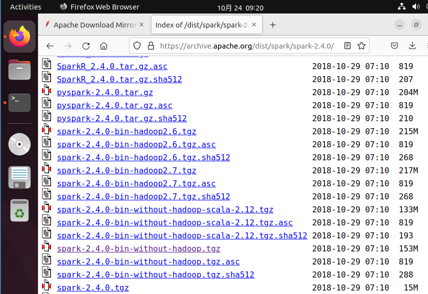
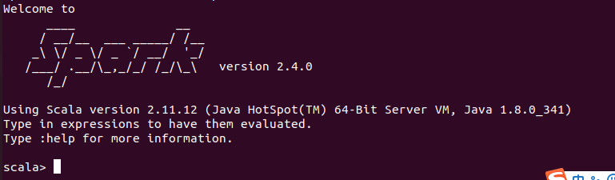
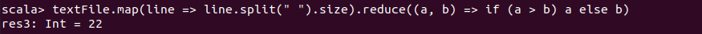
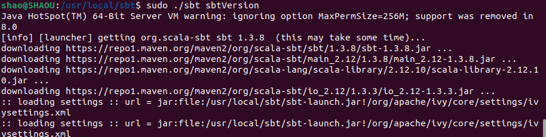
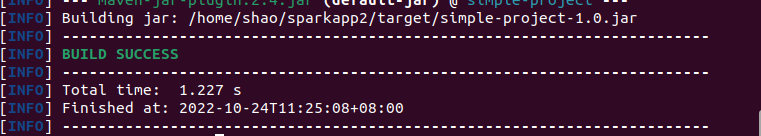

Spark安装与配置
下载Spark

安装Spark
sudo tar -zxf ~/Downloads/spark-2.4.0-bin-without-hadoop.tgz -C /usr/local/修改Spark的配置文件 spark-env.sh：
cd /usr/local/spark-2.4.0-bin-without-hadoop
cp conf/spark-env.sh.template conf/spark-env.sh
sudo vim conf/spark-env.sh在第一行添加：
export SPARK_DIST_CLASSPATH=$(/usr/local/hadoop-3.1.3/bin/hadoop classpath)配置完成后就可以直接使用，不需要像Hadoop运行启动命令。通过运行Spark自带的示例，验证Spark是否安装成功。
cd /usr/local/spark-2.4.0-bin-without-hadoop
bin/run-example SparkPi # 输出信息太多，所需结果不容易找到
bin/run-example SparkPi 2>&1 | grep "Pi is" # 获取所需的输出（利用管道）使用Spark Shell编写代码
启动Spark Shell：
cd /usr/local/spark-2.4.0-bin-without-hadoop
bin/spark-shell
启动spark-shell后，会自动创建名为 sc 的SparkContext对象和名为 spark 的SparkSession对象。sc可以加载本地文件和HDFS文件创建RDD：
val textFile = sc.textFile("file:///usr/local/spark-2.4.0-bin-without-hadoop/README.md")
# 加载HDFS文件和本地文件都是使用textFile，区别是添加前缀(hdfs://和file://)进行标识。一些简单的RDD操作：
textFile.first() //获取RDD文件textFile的第一行内容
textFile.count() //获取RDD文件textFile所有项的计数
val lineWithSpark = textFile.filter(line => line.contains("Spark")) //抽取含有“Spark”的行，返回一个新的RDD
lineWithSpark.count() //统计该RDD的行数可以通过组合RDD操作进行组合，可以实现简易MapReduce操作：
//找出文本中每行的最多单词数
textFile.map(line => line.split(" ").size).reduce((a, b) => if (a > b) a else b)
退出 Spark Shell：
:quit独立应用程序编程
使用 Scala 编写的程序需要使用 sbt （或者Maven）进行编译打包，相应地，Java 程序使用 Maven 编译打包，而 Python 程序通过 spark-submit 直接提交。
安装sbt

sudo tar -zxvf ~/Downloads/sbt-1.3.8.tgz -C /usr/local
sudo cp bin/sbt-launch.jar .接着创建一个Shell脚本文件，用于启动sbt：
vim /usr/local/sbt/sbt内容为：
#!/bin/bash
export JAVA_HOME=/usr/lib/jvm/jdk1.8.0_341
export PATH=${JAVA_HOME}/bin:$PATH
SBT_OPTS="-Xms512M -Xmx1536M -Xss1M -XX:+CMSClassUnloadingEnabled -XX:MaxPermSize=256M"
java $SBT_OPTS -jar `dirname $0`/sbt-launch.jar "$@"保存后，为该Shell脚本文件增加可执行权限：
chmod u+x /usr/local/sbt/sbt然后，可以使用如下命令来查看sbt版本信息：
cd /usr/local/sbt
./sbt sbtVersion
第一次运行上面的sbt编译打包命令会很慢，因为这个过程需要到国外网站下载很多的依赖包。但是，只要安装成功，之后运行命令，速度就比较快了。
为了加快速度，可以尝试更改为国内的仓库地址。
更换仓库地址
cd ~
mkdir .sbt #如果该目录已经存在，就不用创建了
cd .sbt
sudo vim repositories #创建repositories文件在 repositories 中写入：
[repositories]
local
huaweicloud-maven: https://repo.huaweicloud.com/repository/maven/
maven-central: https://repo1.maven.org/maven2/
sbt-plugin-repo: https://repo.scala-sbt.org/scalasbt/sbt-plugin-releases, [organization]/[module]/(scala_[scalaVersion]/)(sbt_[sbtVersion]/)[revision]/[type]s/[artifact](-[classifier]).[ext]保存该文件。然后，修改sbt配置文件 /usr/local/sbt/conf/sbtopts 文件，在末尾新增一行，内容如下：
-Dsbt.override.build.repos=true通过上述设置以后，再去运行sbt编译打包，就会快很多。
编写Scala应用程序代码
执行如下命令创建一个文件夹 sparkapp 作为应用程序根目录：
cd ~
mkdir sparkapp # 创建应用程序根目录
mkdir -p ./sparkapp/src/main/scala # 创建所需的文件夹结构在 ~/sparkapp/src/main/scala 下建立一个名为 SimpleApp.scala 的文件：
sudo vim SimpleApp.scala内容为：
import org.apache.spark.SparkContext
import org.apache.spark.SparkContext._
import org.apache.spark.SparkConf
object SimpleApp {
def main(args: Array[String]) {
val logFile = "file:///usr/local/spark-2.4.0-bin-without-hadoop/README.md"
val conf = new SparkConf().setAppName("Simple Application")
val sc = new SparkContext(conf)
//不同于 Spark shell，独立应用程序需要通过上面该语句初始化SparkContext
val logData = sc.textFile(logFile, 2).cache()
val numAs = logData.filter(line => line.contains("a")).count()
val numBs = logData.filter(line => line.contains("b")).count()
println("Lines with a: %s, Lines with b: %s".format(numAs, numBs))
}
}
// 该程序用于计算文件中包含 "a" 的行数和包含 "b" 的行数。该程序依赖 Spark API，因此我们需要通过 sbt 进行编译打包。
使用 sbt 打包 Scala 程序
在 ~/sparkapp 这个目录中新建文件 simple.sbt，内容如下：
name := "Simple Project"
version := "1.0"
scalaVersion := "2.11.12"
libraryDependencies += "org.apache.spark" %% "spark-core" % "2.4.0"scala的版本和spark的版本可以在之前启动 Spark shell时，从屏幕的显示信息中找到。
为保证 sbt 能正常运行，先执行如下命令检查整个应用程序的文件结构：
cd ~/sparkapp
find .接着就可以通过如下代码将整个应用程序打包成 JAR（首次运行需要下载依赖包 ）：
sudo /usr/local/sbt/sbt package生成的 jar 包的位置为 ~/sparkapp/target/scala-2.11/simple-project_2.11-1.0.jar。
通过 spark-submit 运行程序
将生成的 jar 包通过 spark-submit 提交到 Spark 中运行：
/usr/local/spark-2.4.0-bin-without-hadoop/bin/spark-submit --class "SimpleApp" ~/sparkapp/target/scala-2.11/simple-project_2.11-1.0.jar #该命令会输出太多信息，结果不清晰
# 利用管道
usr/local/spark-2.4.0-bin-without-hadoop/bin/spark-submit --class "SimpleApp" ~/sparkapp/target/scala-2.11/simple-project_2.11-1.0.jar 2>&1 | grep "Lines with a:"注意，对于同一个命令，用
sudo和不用sudo，可能由于环境变量等的设置而使结果不同。
使用Maven对Java独立应用程序进行编译打包
安装Maven
cd ~/Downloads
sudo unzip apache-maven-3.6.3-bin.zip -d /usr/local创建文件夹 sparkapp2 作为应用程序根目录：
cd ~
mkdir -p sparkapp2/src/main/java在 ~/sparkapp2/src/main/java 下建立一个名为 SimpleApp.java 的文件，内容为：
import org.apache.spark.api.java.*;
import org.apache.spark.api.java.function.Function;
import org.apache.spark.SparkConf;
public class SimpleApp {
public static void main(String[] args) {
String logFile = "file:///usr/local/spark-2.4.0-bin-without-hadoop/README.md";
SparkConf conf=new SparkConf().setMaster("local").setAppName("SimpleApp");
JavaSparkContext sc=new JavaSparkContext(conf);
JavaRDD<String> logData = sc.textFile(logFile).cache();
long numAs = logData.filter(new Function<String, Boolean>() {
public Boolean call(String s) { return s.contains("a"); }
}).count();
long numBs = logData.filter(new Function<String, Boolean>() {
public Boolean call(String s) { return s.contains("b"); }
}).count();
System.out.println("Lines with a: " + numAs + ", lines with b: " + numBs);
}
}该程序依赖Spark Java API，因此我们需要通过Maven进行编译打包。
使用Maven打包Java程序
在~/sparkapp2目录中新建文件 pom.xml，内容为：
<project>
<groupId>cn.edu.xmu</groupId>
<artifactId>simple-project</artifactId>
<modelVersion>4.0.0</modelVersion>
<name>Simple Project</name>
<packaging>jar</packaging>
<version>1.0</version>
<repositories>
<repository>
<id>jboss</id>
<name>JBoss Repository</name>
<url>http://repository.jboss.com/maven2/</url>
</repository>
</repositories>
<dependencies>
<dependency> <!-- Spark dependency -->
<groupId>org.apache.spark</groupId>
<artifactId>spark-core_2.11</artifactId>
<version>2.4.0</version>
</dependency>
</dependencies>
</project> 为了保证maven能够正常运行，先执行如下命令检查整个应用程序的文件结构：cd .
cd ~/sparkapp2
find .接着通过如下代码将这整个应用程序打包成 Jar：
cd ~/sparkapp2
/usr/local/apache-maven-3.6.3/bin/mvn package注意：电脑需要保持连接网络的状态，首次运行会下载依赖包。

如果运行Maven编译打包过程很慢，是因为需要到国外网站下载很多的依赖包，为了加快速度，可以更改为国内的仓库地址：参考文章：将Maven源改为国内阿里云仓库。
通过spark-submit 运行程序
将生成的jar包通过spark-submit提交到Spark中运行：
/usr/local/spark-2.4.0-bin-without-hadoop/bin/spark-submit --class "SimpleApp" ~/sparkapp2/target/simple-project-1.0.jar # 输出太多
# 输出想要的结果
/usr/local/spark-2.4.0-bin-without-hadoop/bin/spark-submit --class "SimpleApp" ~/sparkapp2/target/simple-project-1.0.jar 2>&1 | grep "Lines with a"使用Maven对Scala独立应用程序进行编译打包
编写Scala应用程序代码
创建一个文件夹 sparkapp3 作为应用程序根目录：
mkdir -p sparkapp3/src/main/scala在 ~/sparkapp3/src/main/scala 下建立一个名为 SimpleApp.scala 的文件，内容为：
import org.apache.spark.SparkContext
import org.apache.spark.SparkContext._
import org.apache.spark.SparkConf
object SimpleApp {
def main(args: Array[String]) {
val logFile = "file:///usr/local/spark-2.4.0-bin-without-hadoop/README.md"
val conf = new SparkConf().setAppName("Simple Application")
val sc = new SparkContext(conf)
val logData = sc.textFile(logFile, 2).cache()
val numAs = logData.filter(line => line.contains("a")).count()
val numBs = logData.filter(line => line.contains("b")).count()
println("Lines with a: %s, Lines with b: %s".format(numAs, numBs))
}
}该程序依赖Spark Java API，因此我们需要通过Maven进行编译打包。
使用Maven进行编译打包
在~/sparkapp3 目录中新建文件 pom.xml，内容如下：
<project>
<groupId>cn.edu.xmu</groupId>
<artifactId>simple-project</artifactId>
<modelVersion>4.0.0</modelVersion>
<name>Simple Project</name>
<packaging>jar</packaging>
<version>1.0</version>
<repositories>
<repository>
<id>jboss</id>
<name>JBoss Repository</name>
<url>http://repository.jboss.com/maven2/</url>
</repository>
</repositories>
<dependencies>
<dependency> <!-- Spark dependency -->
<groupId>org.apache.spark</groupId>
<artifactId>spark-core_2.11</artifactId>
<version>2.4.0</version>
</dependency>
</dependencies>
<build>
<sourceDirectory>src/main/scala</sourceDirectory>
<plugins>
<plugin>
<groupId>org.scala-tools</groupId>
<artifactId>maven-scala-plugin</artifactId>
<executions>
<execution>
<goals>
<goal>compile</goal>
</goals>
</execution>
</executions>
<configuration>
<scalaVersion>2.11.12</scalaVersion>
<args>
<arg>-target:jvm-1.8</arg>
</args>
</configuration>
</plugin>
</plugins>
</build>
</project>为了保证Maven能够正常运行，先执行如下命令检查整个应用程序的文件结构：
cd ~/sparkapp3
find .
将整个应用程序打包成JAR包：
cd ~/sparkapp3 #一定把这个目录设置为当前目录
/usr/local/apache-maven-3.6.3/bin/mvn package生成的应用程序JAR包的位置为“~/sparkapp3/target/simple-project-1.0.jar”。
通过spark-submit 运行程序
将生成的 jar 包通过 spark-submit 提交到 Spark 中运行：
/usr/local/spark-2.4.0-bin-without-hadoop/bin/spark-submit --class "SimpleApp" ~/sparkapp3/target/simple-project-1.0.jar 2>&1 | grep "Lines with a:"